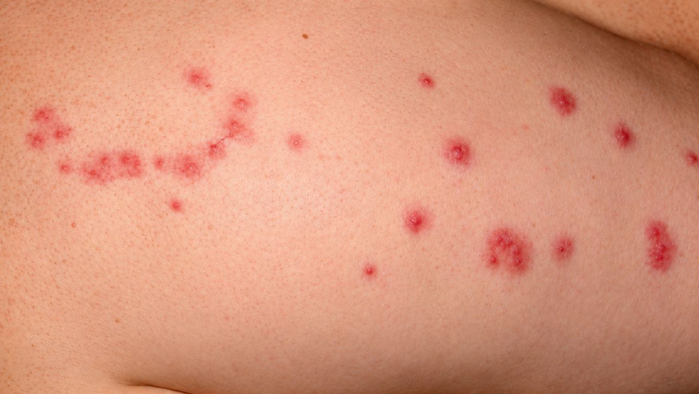
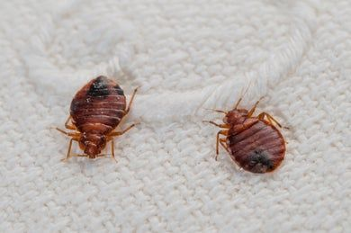
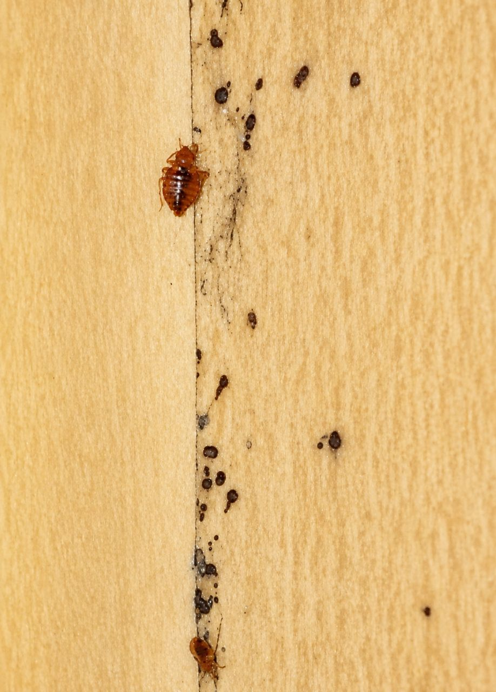
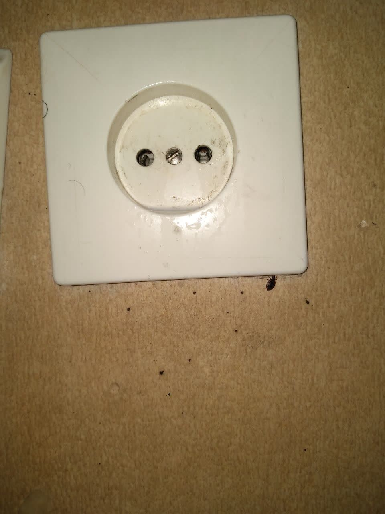

شاید برای شما هم پیش آمده باشد که صبح با چند نقطه قرمز و خارشدار روی پوست از خواب بیدار شدهاید. یا مهمتر اینکه شبها وقتی چراغ را خاموش میکنید، احساس میکنید چیزی روی پوست شما حرکت میکند. اینها نشانههای کلاسیک حضور ساس تختخوابی در منزل شماست.
ساس تختخوابی (Cimex lectularius) یکی از قدیمیترین و آزاردهندهترین آفات خانگی است که در سالهای اخیر بهطور چشمگیری در سراسر جهان، از جمله ایران، رو به افزایش است. برخلاف تصور بسیاری از مردم، ساسها فقط در تختهای کثیف یا هتلهای نامرتب زندگی نمیکنند؛ بلکه این حشرات کوچک و مقاوم میتوانند در تمیزترین خانهها، هتلهای لوکس و حتی بیمارستانها هم پیدا شوند.
در این مقاله جامع، شما را با تمام ابعاد وجودی ساس تختخوابی، روشهای تشخیص، راههای پیشگیری و مهمتر از همه، روشهای اصولی و تخصصی برای ریشهکنی قطعی آن آشنا میکنیم. اگر در تهران یا سایر شهرهای ایران زندگی میکنید و با این مشکل مواجه شدهاید، این مقاله راهنمای کامل شما خواهد بود.
ساس تختخوابی یک حشرهٔ کوچک، بیبال و تخممرغیشکل است که رنگ آن معمولاً قهوهای مایل به قرمز است و پس از تغذیه از خون، تیرهتر و کشیدهتر میشود. اندازهٔ یک ساس بالغ حدود ۴ تا ۷ میلیمتر است که تقریباً به اندازهٔ یک دانه سیبزمینی کوچک یا هستهٔ سیب میباشد.

تشخیص بهموقع ساسها میتواند از یک بحران بزرگ جلوگیری کند. اگر هر یک از این علائم را مشاهده کردید، باید سریعاً اقدام کنید:

اگر ساسها را جدی نگیرید، ممکن است با عواقب زیر مواجه شوید:
| نوع عارضه | توضیح |
|---|---|
| آلرژی شدید | برخی افراد به گزش ساس واکنش آلرژیک شدید نشان میدهند که ممکن است نیاز به درمان پزشکی داشته باشد. |
| اختلال خواب | خارش و نگرانی ناشی از وجود ساس باعث بیخوابی و کاهش کیفیت زندگی میشود. |
| عفونت ثانویه | خاراندن محل گزش باعث ایجاد زخم و عفونتهای باکتریایی میشود. |
| استرس و اضطراب | آگاهی از حضور ساس در خانه میتواند باعث استرس روانی شدید شود. |
| هزینههای بالا | اگر بهموقع اقدام نکنید، هزینههای سمپاشی و تعویض وسایل چندین برابر میشود. |
| انتشار به سایر واحدها | در آپارتمانها، ساسها بهراحتی از طریق منافذ و کانالها به واحدهای همسایه منتقل میشوند. |
شناخت راههای ورود ساس به خانه، اولین گام پیشگیری است. ساسها معمولاً از این طریق وارد خانه میشوند:

| منبع ورود | توضیح |
|---|---|
| چمدان و وسایل مسافرتی | اقامت در هتلهای آلوده و انتقال ساس با چمدان به خانه |
| مبلمان و وسایل دست دوم | خرید تشک، مبل یا وسایل چوبی دست دوم آلوده |
| همسایگان | در آپارتمانها، ساسها از طریق کانالهای برق و لولهها منتقل میشوند. |
| مهمانان | افرادی که منزلشان آلوده است، ممکن است ساس را با خود بیاورند. |
| خشکشوییها | برخی خشکشوییها ممکن است منبع آلودگی باشند. |
کنترل ساس تختخوابی یکی از چالشبرانگیزترین عملیاتها در حوزه کنترل آفات است. این حشره مقاوم، بهسرعت در برابر سموم مقاومت پیدا میکند و به همین دلیل، روشهای خانگی و سمپاشیهای غیرحرفهای معمولاً شکست میخورند.
در شرکت سمپاشی نانوفناوران، برای ریشهکنی قطعی ساس تختخوابی، از روش ترکیبی (Integrated Pest Management) استفاده میکنیم که شامل مراحل زیر است:
اولین و مهمترین گام، شناسایی دقیق کانونهای آلودگی است. کارشناسان ما با تجهیزات تخصصی، تمام نقاط منزل را بررسی میکنند و موارد زیر را شناسایی مینمایند:

یکی از رازهای موفقیت در سمپاشی ساس، آمادهسازی اصولی محیط است. کارشناسان ما قبل از انجام عملیات، نکات زیر را به شما آموزش میدهند:
در این مرحله، کارشناسان ما از ترکیبی از روشهای زیر استفاده میکنند:
اگرچه ساسها از طعمههای غذایی جذب نمیشوند، اما کارشناسان ما از ژلهای جذبکننده مخصوص ساس استفاده میکنند که با جذب فرمونها، ساسها را به سمت سم هدایت میکند.
در موارد آلودگی شدید، از روش حرارتی استفاده میشود که شامل افزایش دمای محیط تا ۵۰ درجه سانتیگراد برای چند ساعت است. این روش کاملاً ایمن و بدون سم بوده و تمام مراحل رشد ساس را از بین میبرد.
به دلیل مقاومت بالای تخم ساسها، معمولاً یک جلسه سمپاشی کافی نیست و نیاز به ۲ تا ۳ جلسه با فاصله ۱۰ تا ۱۴ روز وجود دارد. جلسات دوم و سوم، ساسهای تازهتولیدشده را هدف قرار میدهند.
پس از پایان کار، کارشناسان ما توصیههای زیر را ارائه میدهند:
پس از سمپاشی تخصصی، با رعایت این نکات میتوانید از بازگشت مجدد ساس جلوگیری کنید:
هزینه سمپاشی ساس تختخوابی به عوامل زیر بستگی دارد:
| عامل | تأثیر بر هزینه |
|---|---|
| مساحت منزل | هرچه متراژ بیشتر باشد، هزینه بیشتر است (معمولاً بر اساس متر مربع محاسبه میشود). |
| شدت آلودگی | آلودگی شدید نیاز به عملیات بیشتری دارد. |
| تعداد جلسات سمپاشی | معمولاً ۲ تا ۳ جلسه نیاز است. |
| نوع روش | سمپاشی شیمیایی ارزانتر از روش حرارتی است. |
| موقعیت جغرافیایی | هزینه حمل و نقل و زمان کارشناسان تأثیر دارد. |
💡 توصیه: برای دریافت مشاوره رایگان و استعلام دقیق هزینه با کارشناسان ما تماس بگیرید. با توجه به نوع آلودگی، بهترین روش و هزینه را به شما پیشنهاد میدهیم.
خیر، سموم مورد استفاده توسط شرکت نانوفناوران با رعایت کامل استانداردهای بهداشتی انتخاب میشوند. پس از سمپاشی، با تهویه مناسب، محیط کاملاً ایمن میشود.
معمولاً تا ۲ هفته پس از آخرین جلسه سمپاشی، ساسها بهطور کامل ریشهکن میشوند. در این مدت ممکن است تعدادی ساس زنده مشاهده کنید که طبیعی است.
توصیه نمیشود. ساسها مقاومت بالایی دارند و سموم خانگی معمولاً مؤثر نیستند. همچنین استفاده نادرست از سموم میتواند برای سلامتی خطرناک باشد.
بله، معمولاً ۴ تا ۶ ساعت باید محیط را ترک کنید و پس از بازگشت، منزل را تهویه کنید. کارشناسان زمان دقیق را به شما اعلام میکنند.
خیر، ساسها در شکاف دیوارها، کفپوشها، پریزهای برق، مبلمان، پردهها و حتی داخل کتابها نیز پنهان میشوند.
معمولاً خیر، به دلیل مقاومت تخم ساسها، حداقل ۲ جلسه سمپاشی با فاصله ۱۰ تا ۱۴ روز نیاز است.
ساس تختخوابی یکی از مقاومترین و آزاردهندهترین آفات خانگی است که بدون کمک متخصصان، بهسختی از بین میرود. تشخیص زودهنگام، استفاده از روشهای تخصصی و ترکیبی و رعایت نکات پیشگیری، کلید موفقیت در ریشهکنی این آفت است.
شرکت سمپاشی نانوفناوران با بیش از ۲۰ سال تجربه و استفاده از پیشرفتهترین روشهای کنترل آفات، آماده ارائه خدمات تخصصی و تضمینی به شماست. تیم کارشناسان ما با استفاده از سموم استاندارد و تجهیزات مدرن، ساس تختخوابی را بهطور کامل و قطعی از منزل شما حذف میکنند.
🚀 همین حالا اقدام کنید:
📞 تماس فوری: ۰۹۱۲۰۷۰۵۷۴۶
💬 درخواست مشاوره رایگان: از طریق واتساپ یا ایتا
🔗 مشاهده سایر خدمات: کنترل آفات مسکونی